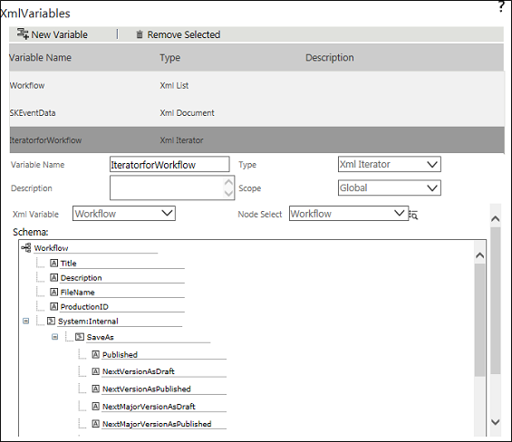

No
To create XML Variable of type XML Iterator Variable:
Variable Name - Enter the name of the variable.
Description - Enter a description for the variable.
Type - This field defaults to XML Document. Select XML Iterator from the drop-down. The XML Iterator type option is available only if another variable of XML Document type exists.
Scope - Select the scope of the variable. The scope of the variable can be either Global or Local.
XML Variable - Select the parent XML Variable. All variables of type XML Document and XML Iterator are listed for selection. The parent variable of an XML Iterator variable can be another XML Iterator Variable.
Select Node - Select the node that the variable represents. Only the nodes in the parent variable are displayed.
XML Iterator Variable Properties
